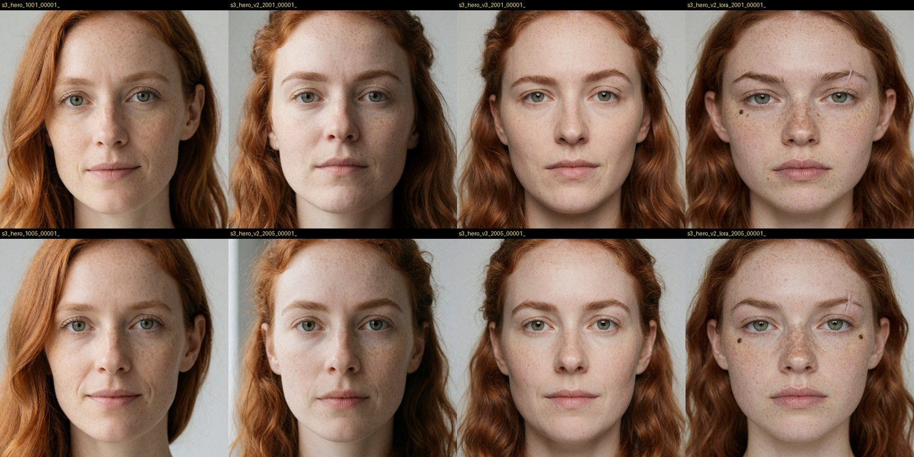
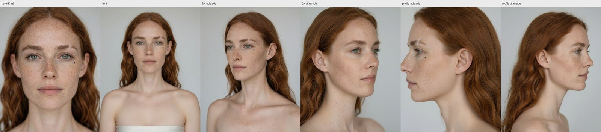
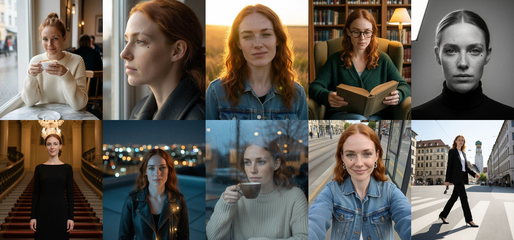
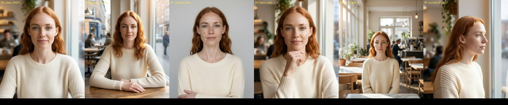
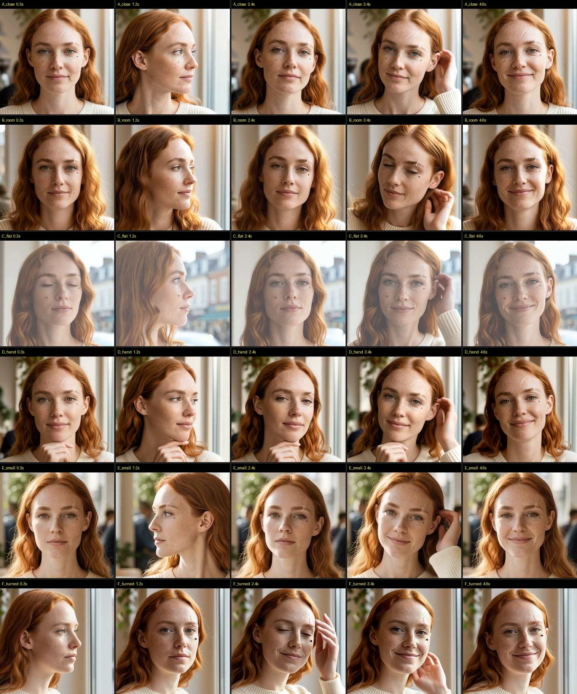
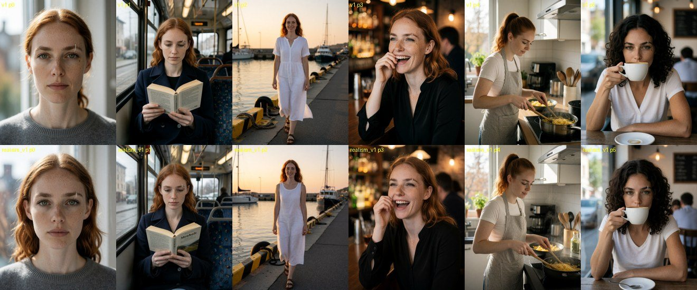
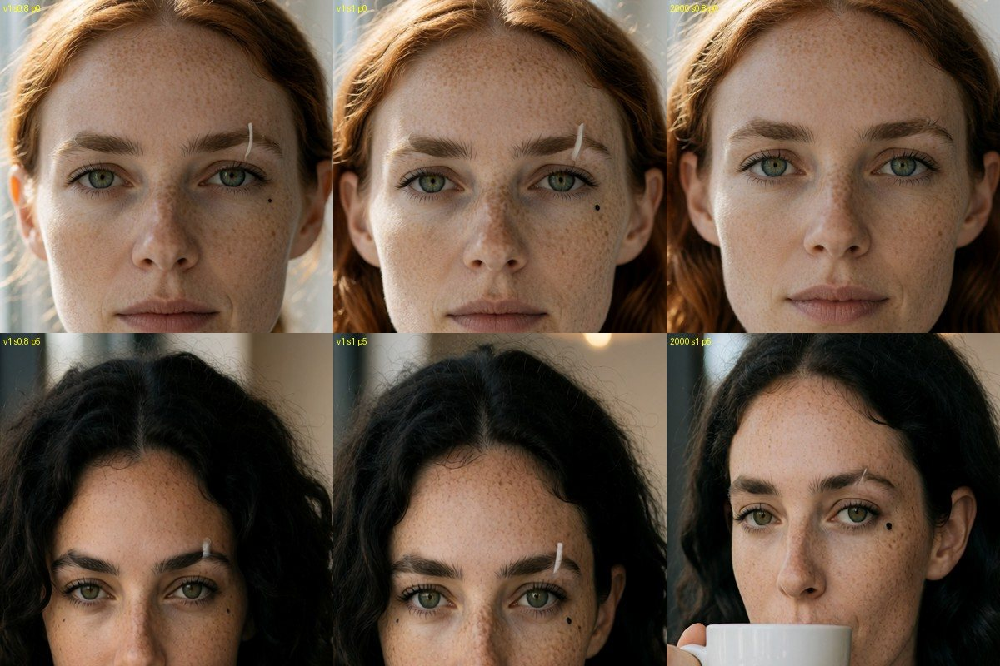
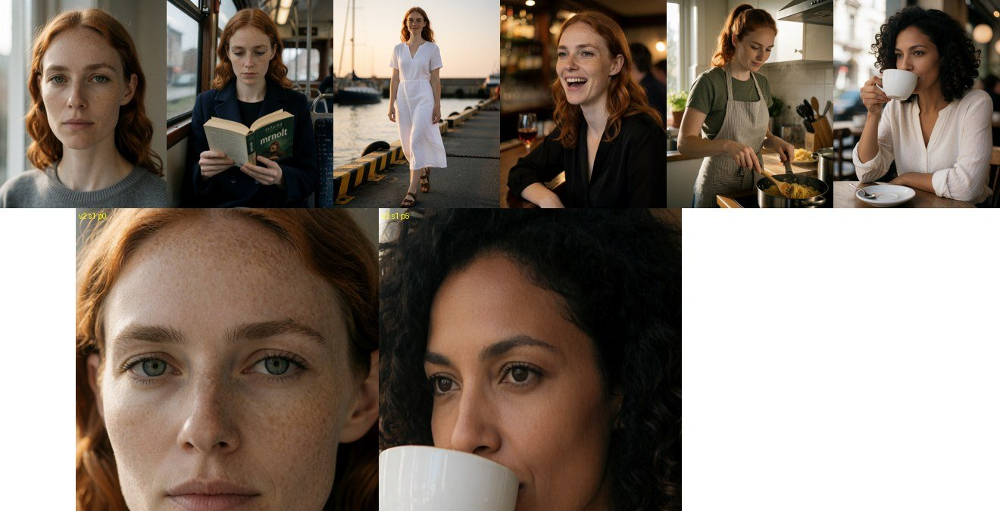
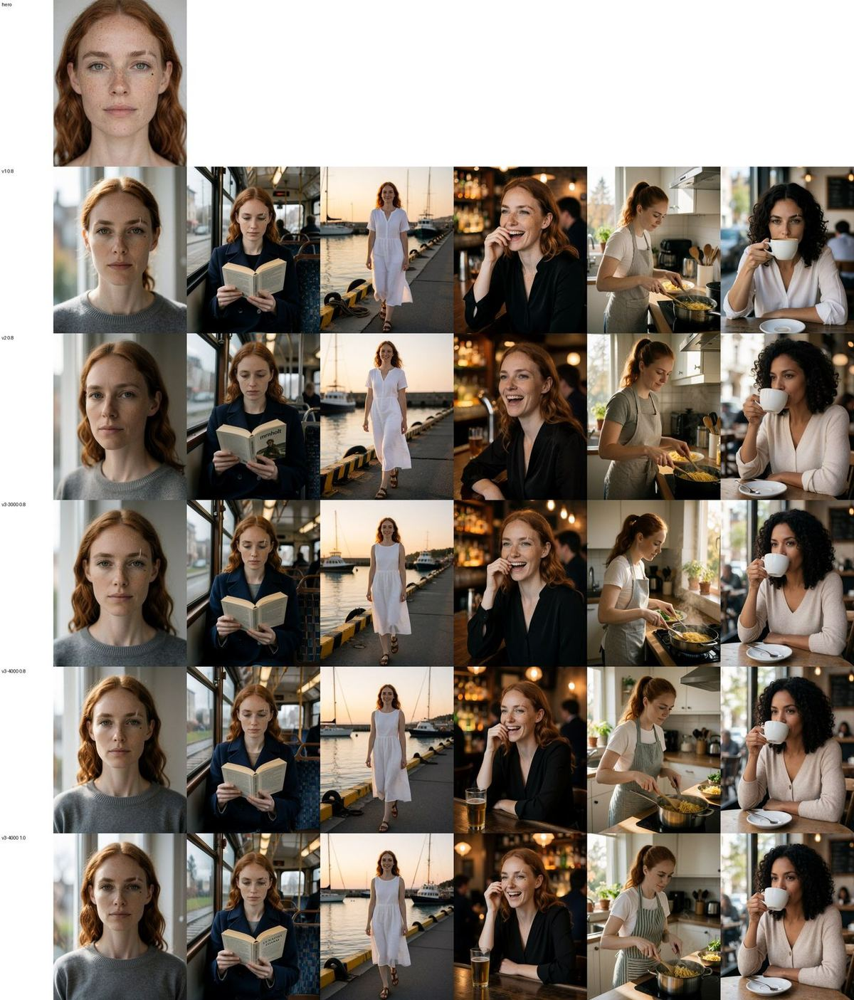
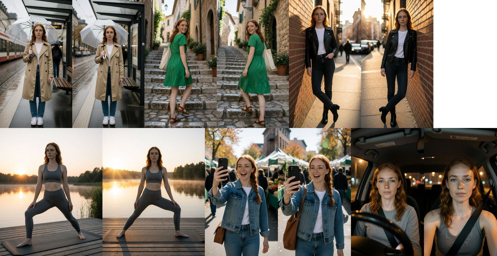

Свой персонаж и LoRA
Как сделать вымышленного персонажа, который узнаётся в каждом кадре и ролике. На примере Марен Холт — от первого лица до LoRA, которая держит родинку и шрам.
Эталонное лицо: как получить приметы и правильный возраст
Персона серии 3 — вымышленная Марен Холт, 29 лет, архитектор из Мюнхена: медно-рыжие волосы, зелёные глаза, веснушки и две постоянные приметы — маленькая родинка под глазом и тонкий светлый шрам у брови. Эталонный (hero) кадр рисовали на Krea 2 Turbo (01b, 2 МП) с формулой «слой личности + слой кадра». Четыре версии промпта, около 70 сидов.
| Версия | Что меняли | Результат |
|---|---|---|
| v1 | боковой свет 45°, «без ретуши» | приметы не появились ни на одном сиде; глубокие несимметричные складки у рта — лицо старше на 10 лет |
| v2 / v3 | приметы описаны конкретно, свет «бабочка» спереди, без «fine lines» | складки ушли, лицо ровное, но приметы всё ещё не рисуются |
| v2 + LoRA | те же слова + LoRA реализма из 01b | приметы на каждом сиде, но лицо выглядит на 17–20 лет |
| v4 | возраст закреплён строением лица: «defined cheekbones, mature composed look», профессия; приметы описаны мельче | приметы на месте, возраст читается как 28–30. Hero = v4, сид 3001 |


- Слова реализма старят лицо. «No retouching», «fine lines» и боковой свет углубляют носогубные складки — это промпт, а не случайность.
- Krea без LoRA не рисует мелкие постоянные приметы, сколько их ни описывай. LoRA реализма их «включают».
- LoRA реализма + слово «youthful» = подросток. Возраст закрепляют строением лица и ролью (профессия, «mature composed look»), а не цифрой.
Лист ракурсов на Qwen-Image-Edit 2511
Анфас, 3/4 и профиль с обеих сторон сделаны одной моделью редактирования из hero-кадра (40 шагов, ~110 с на кадр). Пробовали LoRA Multiple-Angles от fal: для 3/4 она хороша, для профиля обычной фразы хватает.

- Модель тянется к приметам. На просьбу «3/4 с другой стороны» Qwen поворачивал голову так, чтобы родинка осталась в кадре, и обе стороны выходили одинаковыми. Помогла прямая фраза: сторона с приметами отвёрнута и не видна.
- Для LoRA-ракурсов писать «medium shot» и перечислять приметы прямо в инструкции, иначе модель их теряет.
Перенос в новые сцены: заготовка датасета
Тридцать SFW-сцен (кафе, библиотека, горы, ночной город, студия Ч/Б…) из одного hero-кадра на Qwen-Edit. Каждая инструкция = строка личности («сохрани эту женщину: родинка под левым глазом, шрам у левой брови…») + описание кадра. Похожесть лица мерили ArcFace против hero.
| Кадр | Сходство ArcFace | Вывод |
|---|---|---|
| крупный и средний план, лицо к камере | 0,55–0,67 | лицо держится; сцена, одежда и свет выполнены |
| лицо меньше 100 px, смех, профиль | < 0,3 | лицо «плывёт»; в датасет не брать или перегенерировать крупнее |

Первый кадр для видео: шесть вариантов, один сценарий
Шесть первых кадров (крупно, комната, плоский свет, рука у лица, маленькое лицо, отвернулась) → H3, 5 секунд, одинаковый сценарий: поворот к окну, рука убирает прядь, улыбка.


- Начинать анфас, приметы видны. Что не видно на первом кадре, H3 придумывает сам.
- Фон в сценарии = фон на кадре. Если перечислять новые предметы, H3 перерисовывает фон.
- Рука у лица — можно, если рука целиком в кадре с самого начала.
- «Улыбка с сомкнутыми губами» убирает слишком большие зубы.
- H3 иногда копирует родинку на вторую щёку (A, C). Решение нашлось позже: Reference-to-Video по трём видам лица (глава «Референс»).
LoRA v1 и v2: приметы против утечки
50 отобранных кадров, подписи «mrnholt, a woman. <текст сцены>», ai-toolkit, Krea 2 Raw, rank 32, lr 1e-4, 2500 шагов. Арендованная RTX PRO 6000 (96 ГБ): около часа и ~$4. Проверка — на Turbo, как в обычной работе.
| Версия | Похожесть (ArcFace) | Утечка на чужую женщину | Приметы |
|---|---|---|---|
| v1, сила 0,8 | 0,60 | 0,38 | родинка и шрам на правильной стороне — но они переезжают и к брюнетке без триггера |
| v2 (+47 кадров других женщин без триггера), сила 1,0 | 0,60 | 0,24 | утечки нет — но и у Марен приметы пропали |

01b. Последний столбец — промпт без триггера.

- Лицо учится первым (рыжие волосы и веснушки к шагу 1000), мелкие приметы — последними (только к 2500).
- Утечка: если во всех подписях «a woman» и на всех кадрах шрам, модель решает, что шрам бывает у всех женщин. Лечится кадрами других женщин в тех же сценах без триггера (регуляризация), но тогда нужно больше шагов.
- Непонятное слово-триггер Krea иногда печатает текстом — на обложке книги появилось «mrnholt».
- Почему v2 потеряла приметы, выяснилось в коде ai-toolkit: набор регуляризации забирает каждый второй шаг, и персонажу досталась половина обучения. Решение — v3 ниже.
LoRA v3: DOP вместо чужих фото — приметы на месте, утечки нет
Так же делают авторы LoRA на Civitai: никакого набора чужих женщин, вместо него режим DOP (Differential Output Preservation) — при каждом шаге модель сверяет, что промпт без триггера даёт то же, что и без LoRA. Триггер — имя «Maren Holt» вместо «mrnholt». 53 картинки (47 сцен + эталон + 5 ракурсов), rank 32, lr 1e-4, 4000 шагов, сохранение каждые 250. Арендованная PRO 6000: ≈ 3,3 часа, ≈ $9.
| Версия · сила | Портрет | Полный рост | Среднее | Утечка | Приметы |
|---|---|---|---|---|---|
| v1 · 0,8 | 0,67 | 0,45 | 0,58 | 0,37 | есть, но и у чужой брюнетки |
| v2 · 0,8 | 0,65 | 0,46 | 0,51 | 0,22 | пропали |
| v3, 2500 шагов · 0,8 | 0,75 | 0,55 | 0,62 | 0,16 | есть |
| v3, 4000 шагов · 0,8 | 0,79 | 0,54 | 0,65 | 0,15 | шрам и родинка, правильная сторона |
| v3, 4000 шагов · 1,0 | 0,76 | 0,47 | 0,60 | 0,15 | есть |
ArcFace к эталону; среднее по пяти сценам (портрет, трамвай, причал в полный рост, бар, кухня), все версии перерисованы в одном прогоне на локальном стеке Turbo; «утечка» — сходство с Марен у брюнетки из промпта без триггера (меньше = лучше).


- Рецепт для персонажа с мелкими приметами: без набора регуляризации, DOP включён, триггер-имя, ≥ 4000 шагов, проверка на промпте без триггера и на кроп-листе, а не только по среднему ArcFace (все чекпойнты v3 — в пределах 0,59–0,65) ЗАМЕР.
- Сила 0,8 лучше 1,0: среднее и полный рост выше, на глаз одинаково.
- Для отдельных кадров есть путь проще: одна чистая фотография + Qwen-Image 2.1 даёт сходство 0,81 без обучения, но копирует позу (глава «Референс»). LoRA нужна для серий кадров, полного роста и видео.
Рецепт целиком: от лица до LoRA
| Датасет | Норма | Зачем |
|---|---|---|
| Размер | 40–60 | больше 30 без разнообразия даёт переобучение |
| Крупность | 35 / 35 / 30 % | лицо · по пояс · в рост; без крупных планов лицо искажается |
| Одежда | ≥ 10, каждая ≤ 15 % | иначе одежда «прилипнет» к персоне |
| Фоны | ≥ 12, каждый ≤ 10 % | то же с фоном |
| Подписи | триггер + всё изменяемое | лицо и приметы не описывать, их «впитает» триггер |
- Применение: LoRA персоны на Turbo с силой 0.8–1.0, LoRA реализма тогда ≤ 0.5.
- Видео: кадр с персоной идёт первым кадром в
03, H3 держит лицо из него (см. правила выше). - Лицензии: Identity Edit V2 только для некоммерческого использования. Krea 2 разрешает коммерцию при выручке до $1 млн. У H3 открытые веса не распространяются на ЕС.
Для ИИ-агентов: эта глава в Markdown · llms.txt